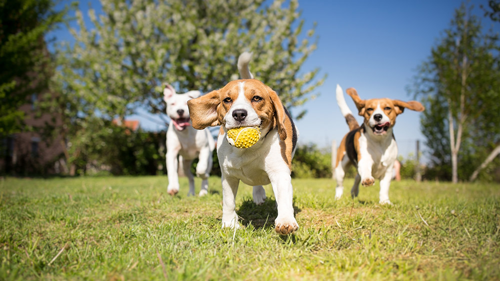

Get to know us
At our facility, we believe every dog deserves a day filled with purpose, play, and plenty of belly rubs. Founded in 2016, our mission has always been to provide a safe, high-energy environment where dogs can truly be dogs. We understand that your pup isn't just a pet—they’re family—and we’ve built a space that reflects that level of care and commitment.
What started as a passion for canine companionship has grown into a full-service retreat. Whether your dog is here for a day of socialization, a fresh new look in our grooming salon, or a cozy overnight stay, we treat every guest with the same individual attention we give our own four-legged best friends.
Why Choose Us?
- Safe & Social Play: Our supervised daycare groups are carefully curated by size and temperament to ensure every pup has a positive experience.
- Professional Grooming: From sudsy baths to precision clips, our groomers focus on making your dog look and feel their absolute best.
- Home-Away-From-Home Boarding: We offer a comfortable, secure environment for overnight stays, giving you peace of mind while you're away.
- Freshly Baked Treats: No visit is complete without a stop at our in-house bakery, featuring wholesome, dog-friendly snacks made with love.

We’ve spent the last decade perfecting the art of "the tired, happy dog." Stop by, sniff around, and see why our community trusts us to be their dog’s favorite home away from home.